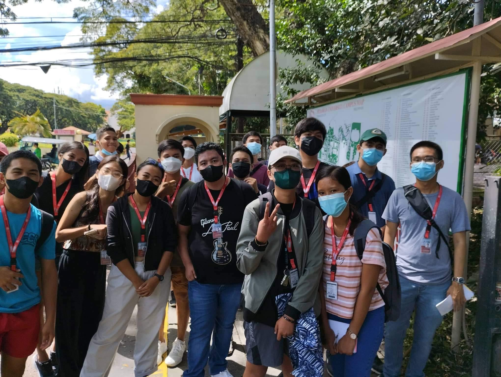
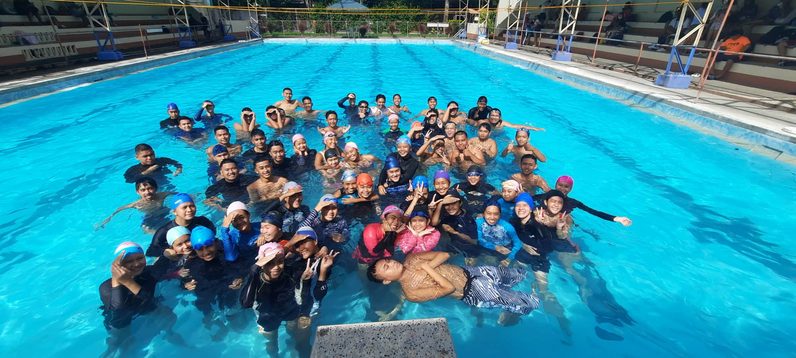
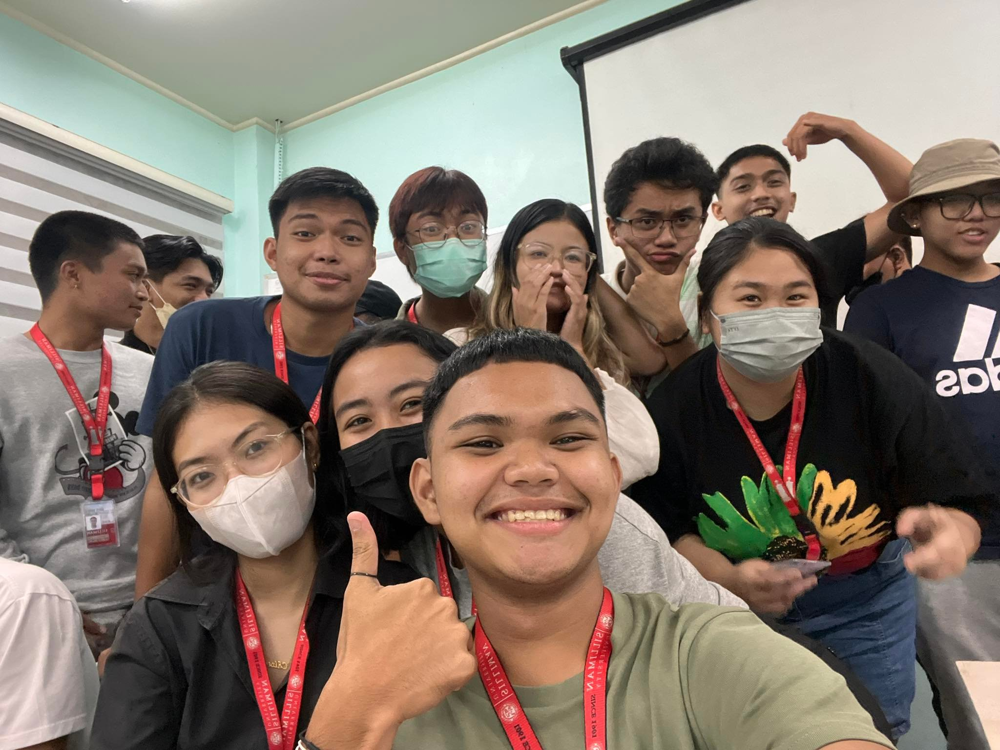
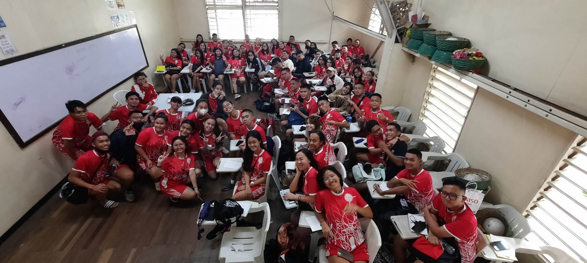
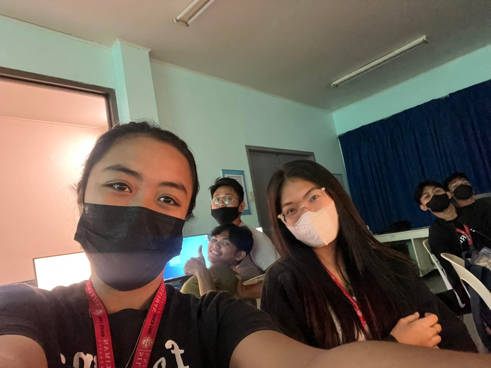
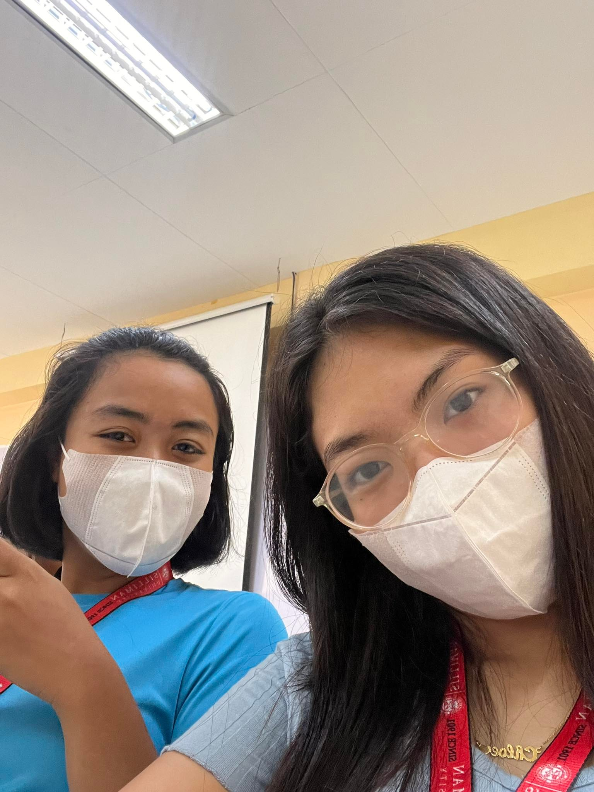
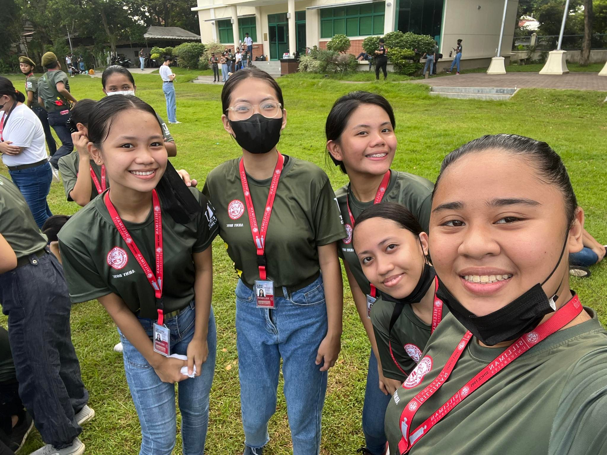
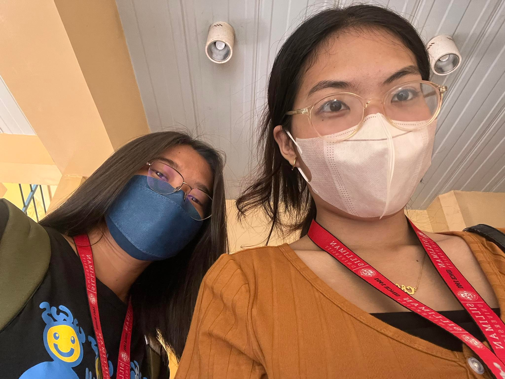
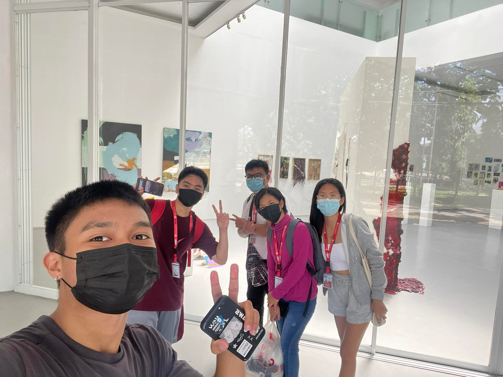
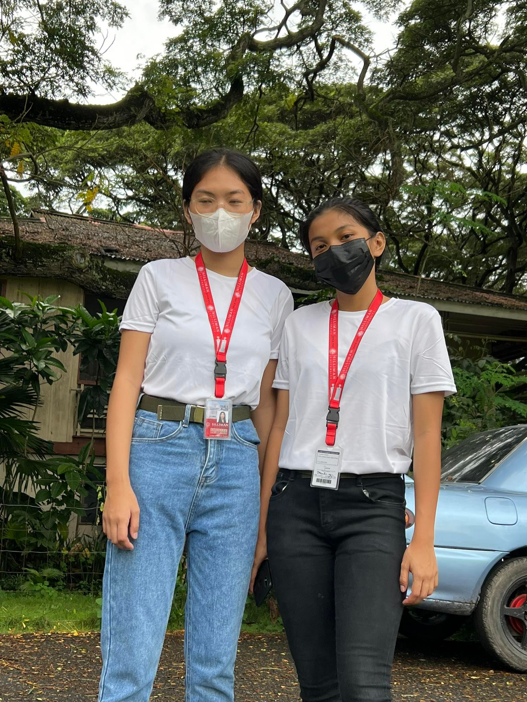

11/09/22(12:00pm)
Campus Tour!
Ma'am Joy Dy
Participant
The school campus tour in Silliman University was a remarkable experience that provided me
with a glimpse into the rich history, academic excellence, and vibrant campus life that the
university offers. It left me inspired and excited about the prospect of being a part of such
a prestigious institution and its warm and welcoming community.

10/13/22(9:00am)
Practical Swimming
Ma'am Kathleen Dellona
Participant
My swimming class experience in Silliman University has been transformative
and rewarding. It has taught me to overcome fear, build confidence, embrace
patience and perseverance, trust the process, value a supportive community,
and find joy in the present moment.

12/14/22(5:30pm)
Final Meet in CCS1
Sir Kim Faburada
Participant
The final meet in our class in CCS1 was a
challenging yet rewarding experience that tested my
knowledge and skills in web development.

12/05/22(9:00am)
Practical Fitness Gym
Ma'am Kathleen Dellona
Participant
Engaging in physical fitness exercises has been a truly rewarding experience.
Through regular workouts and activities, I have witnessed significant improvements in my physical health,
mental well-being, and overall discipline.

09/28/22(5:30pm)
CCS1 Class
Sir Kim Faburada
Participant
CCS1 class has been a transformative experience, providing me with a strong
foundation in probgramming language. The introduction to key concepts,
problem-solving skills, exposure to programming languages, collaboration
opportunities, and the cultivation of a growth mindset have positioned me
for future success in the field.

10/12/22 (12:00pm)
GE10 Class
Ma'am Joy Dy
Participant
I am grateful for the insights gained and confident that the knowledge and
skills acquired in GE10 will serve me well in my academic and personal pursuits.

11/26/22(7:00am)
Final Training For First Sem
Red Shield ROTC
Participant
I am grateful for the insights gained and confident that the knowledge and skills
acquired in GE10 will serve me well in my academic and personal pursuits. The rigorous
physical exercises pushed me to test my limits and develop resilience both physically and mentally.

12/15/22(1:20pm)
Final Exam GE10
Silliman University
Participant
The exam challenged me to apply critical thinking skills, draw connections
between different disciplines, and analyze complex concepts.

09/19/22(12:00pm)
SU Campus Tour
Silliman University
Participant
The tour provided a glimpse into the rich history and heritage of the university,
as well as its commitment to academic excellence and holistic development.
Exploring the various academic buildings, libraries, and facilities showcased the university's
dedication to providing a conducive learning environment for its students.

11/26/22(7:00am)
Final Training For First Sem
Red Shield ROTC
Participant
The final training for the first semester in the ROTC program at Silliman University
was a transformative and fulfilling experience. Throughout the training,
we were challenged both physically and mentally, pushing us to our limits and beyond.

10/26/22(3:00am)
Drills and Ceremonies PT
Red Shield ROTC
Participant
Collaborating with my fellow cadets, we meticulously planned, filmed, and edited the
video to showcase the precision and discipline that we have learned throughout our training.